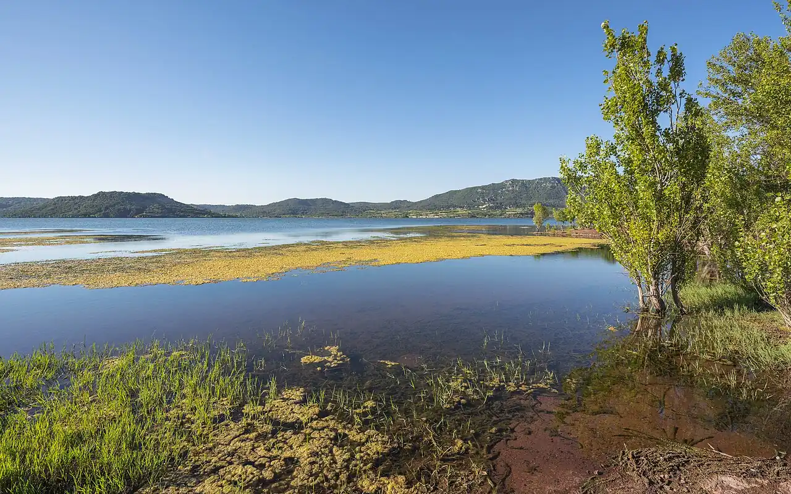

Lac du Salagou
Hérault, France · paddle, kayak, baignade, windsurf

Lac de barrage créé à la fin des années 1960, entouré de terres rouges (les ruffes) et de collines volcaniques. Son eau calme attire paddles, kayaks et planches à voile quand le vent se lève.
- Lieu
- Hérault, France
- Niveau
- Débutant
- Activités
- paddle, kayak, baignade, windsurf
- Type d'eau
- lake
- Coordonnées
- 43.67, 3.36 (position approximative du secteur)
Dangers à connaître
- Le vent peut se lever vite et éloigner les paddles du rivage.
- Baignade surveillée seulement sur certaines plages en été.
Le conseil d'Ocean Buddy
Mets-toi à l’eau près de la base nautique des Vailhés et reste proche du bord si le vent forcit.
Ouvrir dans Ocean Buddy Télécharger sur l'App Store
Source : Fiche Ocean Buddy · septembre 2026 · à vérifier localement.